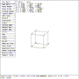

Next: Object Pick State
Up: TUTORIALS ON VIEWING
Previous: Solid Pick State
mged> d ellg
mged>
Select the solid called ``arb8''.

Figure (t1-sol-ed): Solid Edit State
The d commmand removes something from the display. In this
case, the solid ``ellg'' was removed to reduce clutter.
The display should now look like
Figure (t1-sol-ed)
.
When MGED enters the solid edit state, the following occurs:
- The solid selected for editing remains illuminated,
- The solid is labeled,
- The coordinates (or dimensions) associated with the labels,
and other information is displayed to the right of the menu area,.
- If the solid is a member of one or more groups, a similar set
of coordinates called the PATH is displayed immediately below
the the first set of coordinates,
- The *SOLID EDIT* menu is displayed, and,
- A solid specific edit menu (in this case the ARB MENU)
is displayed.
The *SOLID EDIT* menu provides access to generic operations (translation, rotation
and scaling) common to all solids.
The solid specific edit menu is a list of solid type specific editing operations.
Selecting one of the solid specific edit menus causes a submenu with solid type specific
choices to be displayed. To remove this submenu, select either the
RETURN item in the submenu, or the edit menu item in the
*SOLID EDIT* menu.
It is in this state that the solid is altered to meet the modeler's
requirements. The shape, positioning, and orientation of the solid is
changed using numeric keyboard input, positioning of the mouse, or by
use of the knobs. Once the solid has been altered, the edit is
either accepted or rejected. Accepting the edit causes all changes
made to be written to the database; rejecting the edit ``throws them
away''. Either operation will terminate the edit session and return MGED
to the VIEWING state.
Reject the edit.
Next: Object Pick State
Up: TUTORIALS ON VIEWING
Previous: Solid Pick State
{kind=link}